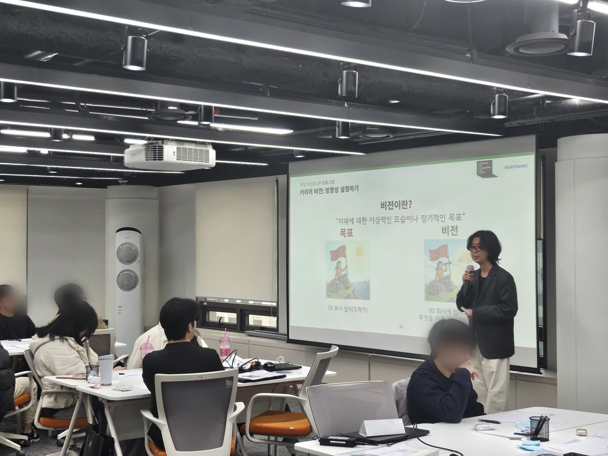
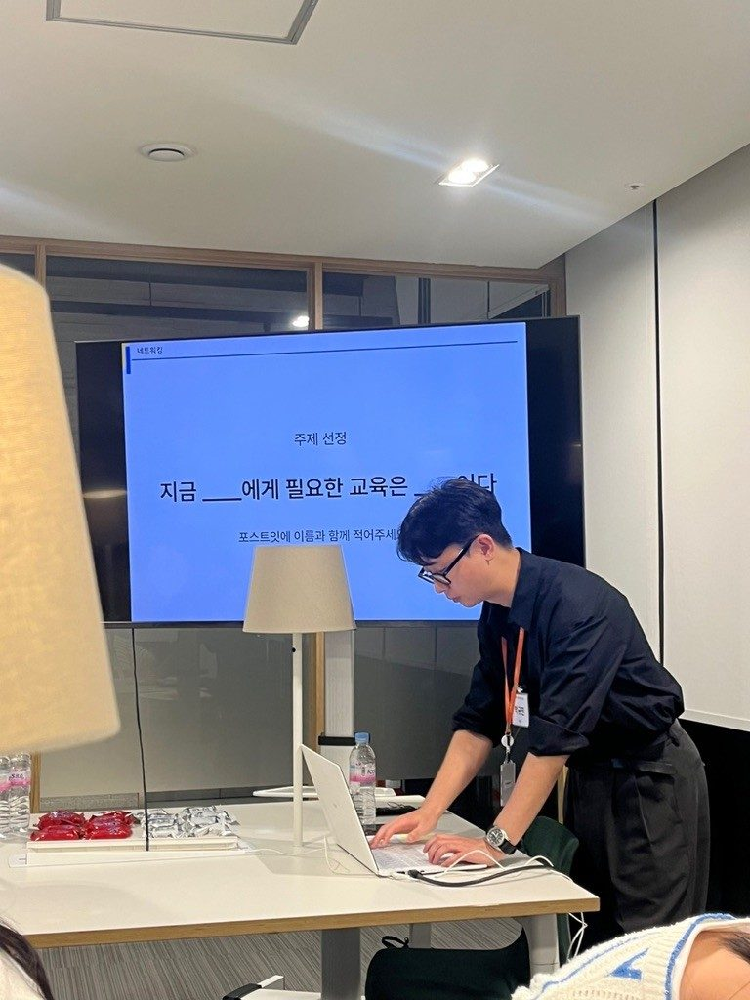
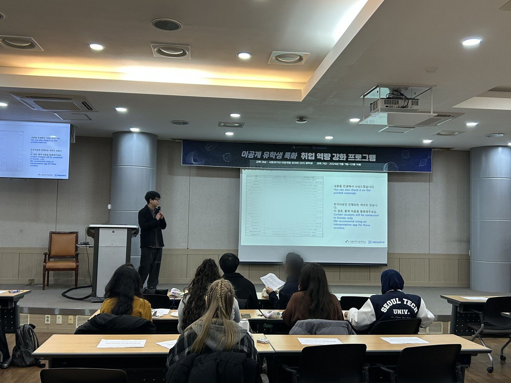
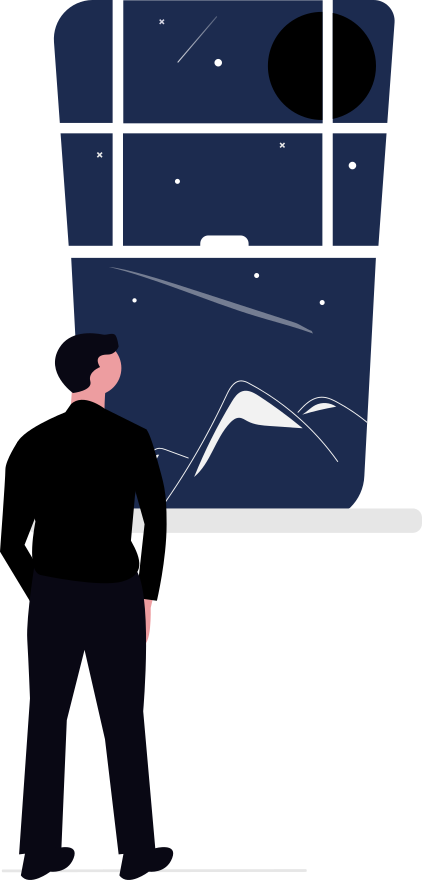

1:1 코칭
삶에 대한 확신을 갖고
자유롭게 살아가기 위한 라이프 코칭
지금 나의 상황과 앞으로 다가올 미래에 대해 정리해 보고 싶은 사람들을 위한 90분, 1:1 코칭 프로그램입니다.

이런 고민이라면
지금 이 길이 맞는지,
확신이 서지 않는다면
1:1 코칭을 하며 가장 자주 다룬 주제들입니다.

- 지금 일이 어렵지는 않은데, 계속하고 싶은 일인지는 모르겠어요.
- 남들도 다 준비하는 길로 가고 있는데, 이게 정말 내가 원하는 방향인지 모르겠어요.
- 퇴사를 할지 말지, 몇 달째 같은 고민만 하고 결정을 내리지 못하고 있어요.
- 회사에서 들은 작은 말 한마디에도 하루 종일 마음이 흔들리고 괴로워요.
- 주변 사람에게 맞추기만 하다 보니, 정작 내가 뭘 원하는지 정말 모르겠어요.
코칭이 처음이라면
코칭의 특징
코치 소개
안녕하세요, 박규진입니다
저는 사람들이 타고난 가능성을 최대한 펼치며 사는 것이 그 사람에게도, 세상에도 좋은 일이라고 믿습니다. 어릴 때부터 자기 분야에 헌신해 탁월한 결과를 만들고 그것을 나누는 사람들의 이야기에 많은 흥미를 느꼈고, 다른 사람이 자신의 가능성을 조금이라도 펼칠 수 있도록 도울 때 제가 가장 깊이 몰입한다는 것을 알게 되었습니다.
저 역시 어떻게 살아야 '잘 사는 것'인지 매일 고민했습니다. 여러 경험을 통해 직접 부딪혀 가며 찾아보았지만, 그것만으로는 '확신'이 생기지 않았습니다.
돌아보면 오랫동안 제 선택의 기준은 외부 사람들과 환경에 있었습니다. 사람마다, 상황마다 거기에 맞춘 제가 있었고, 진짜 제 생각은 점점 희미해졌습니다. 그 기준을 내려놓고 나서야 알았습니다. 새 기준은 밖이 아니라 안에서 찾아야 한다는 것을요.
나를 알고 나서야, 쌓아 온 경험들이 하나로 이어졌습니다.
확신은 내면을 깊이 들여다보고, 솔직한 질문을 던지고, 내가 추구하는 가치와 비전을 찾은 뒤에야 찾아왔습니다. 가치와 비전, 삶과 일, 그리고 나를 움직이는 힘이 하나로 이어지는 경험이었습니다.
2020년부터 사람의 성장과 가능성을 고민하며 교육을 만들어 왔습니다. 한 분야 최고의 전문가들이 가진 지식을 교육 콘텐츠로 만들었고, 청년들이 자신만의 커리어를 찾도록 돕는 교육 프로그램을 처음부터 끝까지 설계했습니다. 최근 3년은 청년들과 1:1로 마주 앉아 고민을 듣고 함께 길을 찾았습니다. 그렇게 자기 기준을 정리한 사람들이 자기소개서와 면접에서, 그리고 중요한 선택 앞에서 확신을 갖고 말하고 선택하는 모습을 많이 보았습니다.
가장 의미 있었던 순간은 언제나 1:1 대화에서 누군가 자기 길을 스스로 알아차릴 때였습니다. 그래서 이제 그 일에 온전히 집중하려 합니다. 취업이든 이직이든, 삶의 중요한 순간에 스스로 납득할 수 있는 선택을 하도록 곁에서 돕겠습니다.
박규진 드림
강의와 워크숍 현장






비전
삶의 비전을 찾고
가능성을 펼치며
자유롭게 살아가는 사람들이 많은 세상
남에게 맞춘 여러 개의 나 속에서도 진짜 자기 생각을 쉽게 꺼내고,
주체적이고 자유롭게 선택하며 자신의 가능성을 펼치며 사는 사람이 많아지기를 바랍니다.
그래서 자유를 깊이 탐구하고, 그것을 스스로 찾을 수 있도록 돕고 있습니다.
코칭 방법
급속도로 변하는 시대일수록,
본질에 기반합니다

AI는 내가 할 수 있는 것들을 늘려 주지만, 내가 무엇을 하고 싶은지는 찾아 주지 않습니다. 정보와 기술, 그럴듯한 답은 점점 쉽게 얻을 수 있게 되었고, 그럴수록 나와 세상에 진정으로 가치 있는 것이 무엇인지 알아보는 것이 더 중요해졌습니다.
About Freedom의 코칭은 본질에 기반합니다. 겉으로 드러난 고민을 서둘러 해결하지 않고, 그 아래를 깊이 들여다보며 지금까지 나를 움직여 온 진짜 기준을 찾습니다. 답을 드리기보다 질문하고, 스스로 찾을 수 있게 돕습니다.
코칭 과정
코칭에서 자주
만나는 질문들
그중 자주 등장하는 대표적인 질문들입니다. 카드를 눌러 보세요.
이게 전부는 아닙니다.
고민에 따라 필요한 질문을 함께 찾습니다.

코칭 후
코칭이 끝난 후
이런 것들을 알게 됩니다
- 내가 추구하는 가치
- 나의 비전과 삶의 방향성
- 내가 가능성을 쉽게 펼치는 환경
- 나에게 독이 되는 환경과 사람
- 나도 모르게 내가 반복해 온 패턴
프로그램
나에게 필요한 횟수를 먼저 정하고 시작합니다
- 초기 상담
- 10~15분 통화, 무료. 맞는 회차를 추천해 드립니다.
- 시간
- 회당 90분, 1~2주 간격
- 장소
- 오프라인 장소 미정, 온라인은 Google Meet
진행 안내
신청부터 첫 만남까지, 네 단계로 진행됩니다
- 1신청서 작성지금의 고민을 간단하게 적어주세요.
- 2첫 통화 10~15분문자로 시간을 정해 통화하고, 맞는 프로그램을 추천해 드립니다. (무료)
- 3결제결제 링크와 함께 코칭에 대해 안내해 드립니다.
- 4첫 세션오프라인 또는 Google Meet에서 만납니다.
환불
3회와 5회 프로그램은 첫 만남 후 맞지 않다고 느끼시면 다음 회차 전까지 말씀해 주세요. 첫 회 비용을 포함해 전액 환불해 드립니다. (1인 1회) 1회 프로그램을 받은 뒤 3회나 5회로 이어가시면 1회 비용을 차감합니다.
일정 변경
약속 24시간 전까지는 자유롭게 바꿀 수 있습니다. 당일 취소는 1회 진행으로 처리됩니다.
FAQ
자주 묻는 질문
이직 컨설팅이나 자기소개서 첨삭도 해주나요?
가능합니다. 나의 가치관과 방향성을 먼저 정리하고, 커리어 방향과 자기소개서 내용을 함께 살펴봅니다.
신청하면 바로 비용이 드나요?
아닙니다. 신청과 첫 통화는 무료이고, 통화 후 진행하지 않으셔도 괜찮습니다.
몇 회 프로그램을 고르면 좋을까요?
첫 통화를 통해 적절한 회차 수를 함께 고민하고 정합니다.
온라인으로도 받을 수 있나요?
네. 직접 오기 어려우시면 Google Meet로 진행하며, 비용은 같습니다.
환불은 어떻게 되나요?
3회와 5회는 다음 회차 전까지 말씀해 주시면 첫 회 비용을 포함해 전액 환불해 드립니다(1인 1회). 1회 프로그램은 환불 대신, 3회나 5회로 이어가실 때 비용을 차감합니다.
코칭 내용은 비밀이 보장되나요?
네. 동의 없이 밖으로 꺼내지 않고, 사례 소개는 따로 동의를 받은 경우에만 알아볼 수 없게 합니다. 다만 생명과 안전에 급박한 위험이 있는 경우는 예외입니다.
코칭 신청
지금의 고민을
간단하게 적어주세요
신청서를 읽고 제가 직접 문자를 드립니다. 신청과 첫 통화는 무료입니다.